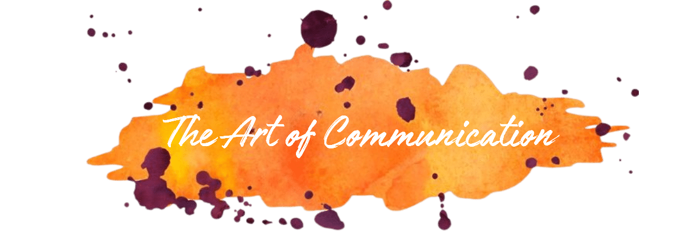

The Art of CommunicationMaster Communication That Works
Transform conflict into clarity, anxiety into aliveness, and isolation into intimate belonging.
Stop Feeling Stuck in Your Head. Start Living in Deep Connection.
You long for authentic connection but find yourself overthinking, avoiding conflict, or repeating the same painful patterns. You're not broken — you just need the right tools and community.
You know how you want to show up, but in charged moments, you lose access to that grounded version of yourself.

I know how painful it can be to feel cut off — from yourself, from others, and from the kind of life you long to live. The anxiety and patterns that leave you feeling alone aren't your fault.
For the past 15 years, I've helped thousands of people move past these struggles, drawing on Nonviolent Communication, psychotherapy, and over a year of silent meditation retreats. I'm here to guide you with compassion and practical tools.
Stories of Transformation
"There is one modality I recommend to everyone without reservation, and that is NVC. Danny brings not only his deep knowledge but also his compassion and presence."
"This course gave us powerful practices that helped us navigate some of our most difficult conversations — a magical combination for learning."
"The content renews me with hope in a way that I haven't experienced in a long time. I can imagine a beautiful world where needs are met."
From Stuck to Flowing
Enter a Safe Space
Download our guide, or join a free intro gathering and feel the relief of presence and care.
Get the Guide →Learn Tools That Work
Join our 10-week cohort. Weekly practice, real skills, a supportive community.
Join Cohort →Continual Integration
Ongoing community with bi-weekly practice — your map back to yourself.
What's Possible When You Step In
Deeper intimacy and trust in your closest relationships
Replace reactivity with clarity and confidence
Feel genuinely supported and understood
Bring aliveness to every conversation
Skills that strengthen your whole life
Ready to Begin?
Join a cohort and start practicing the Art of Communication with real support, real people, and real tools.
Join a Cohort